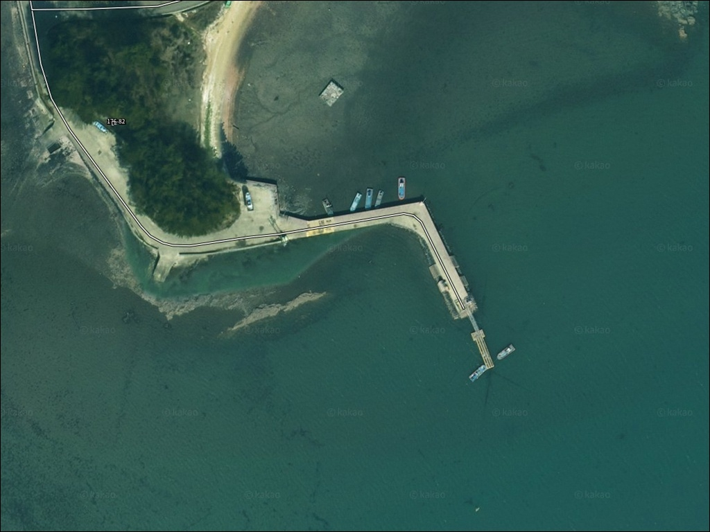
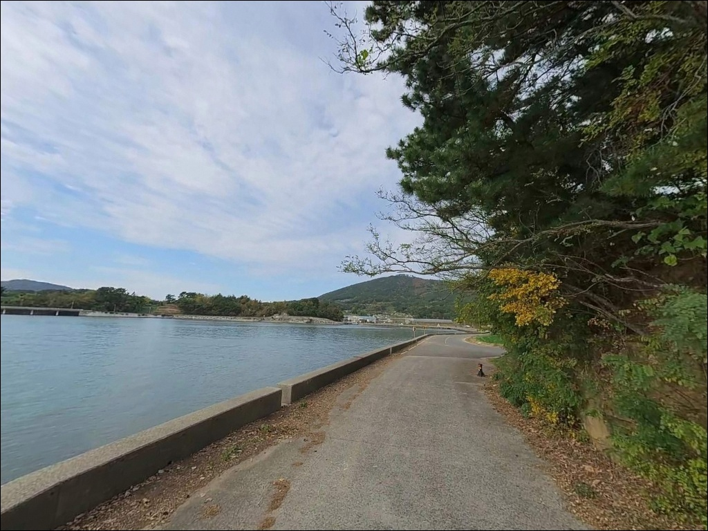
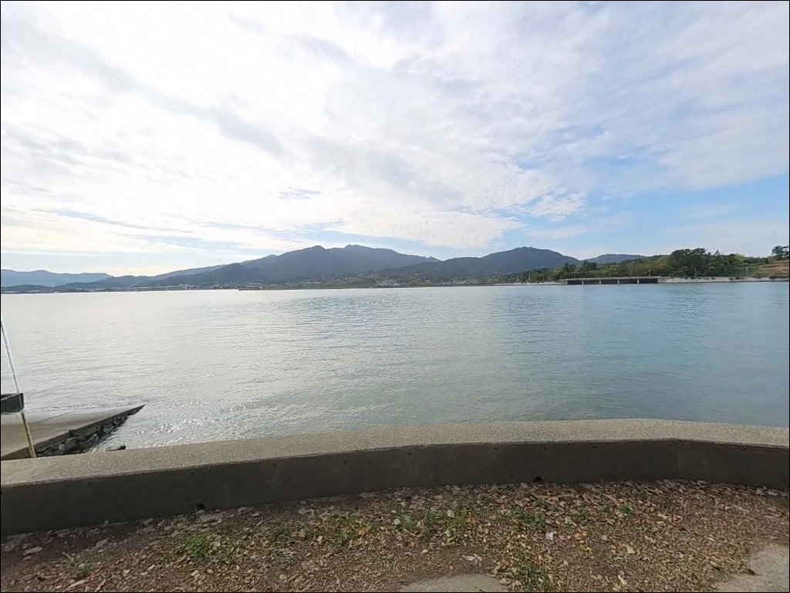
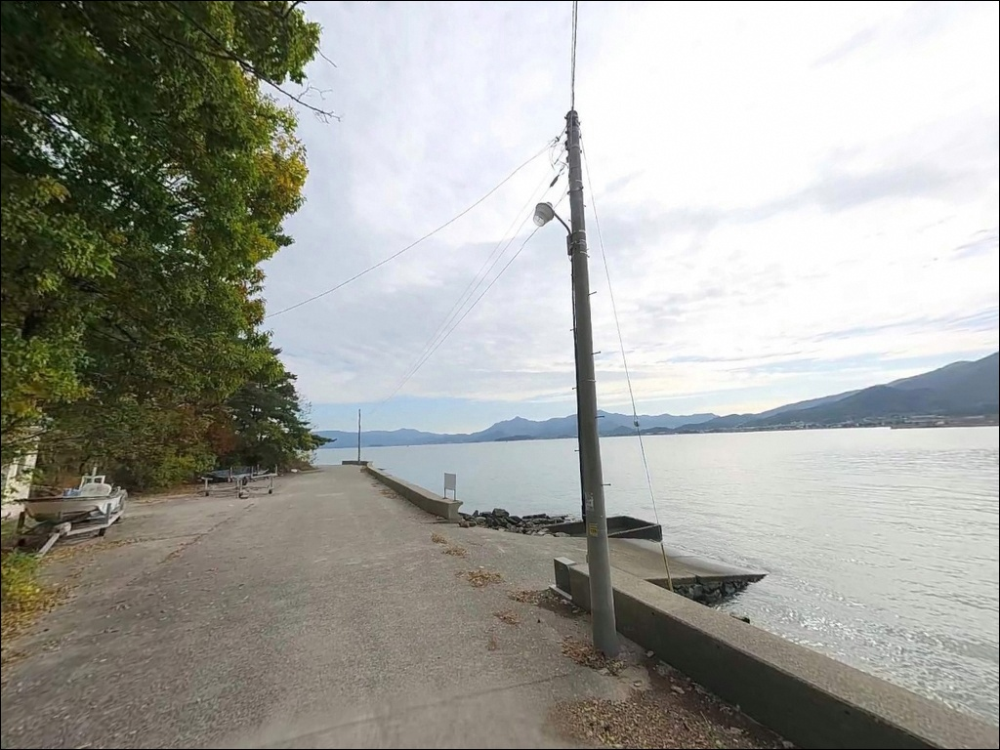
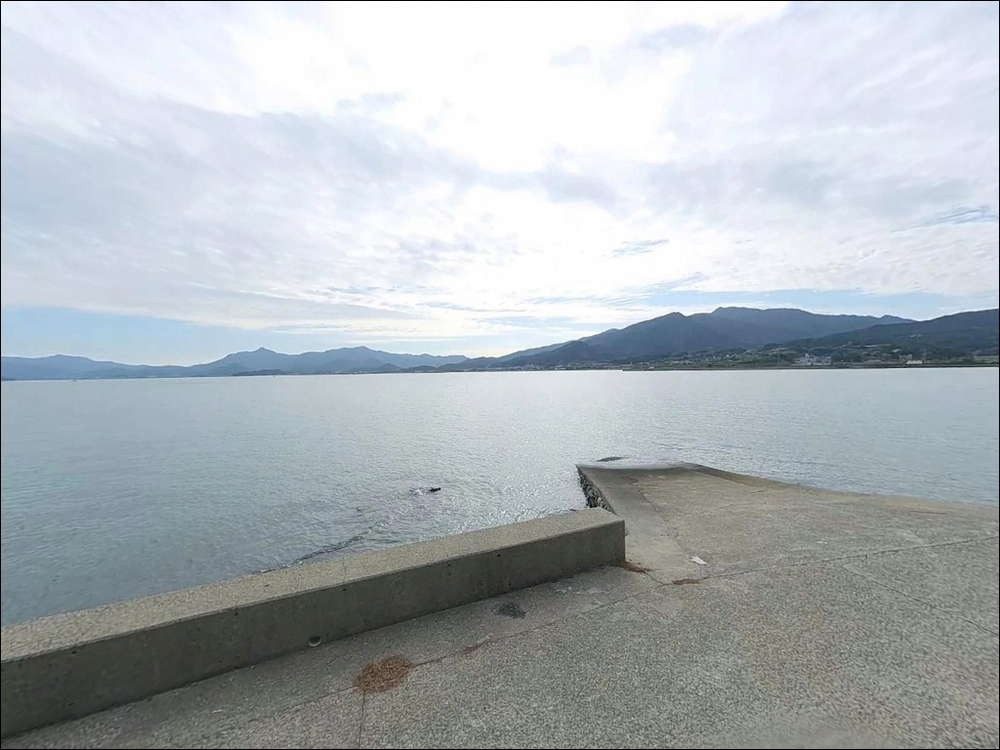
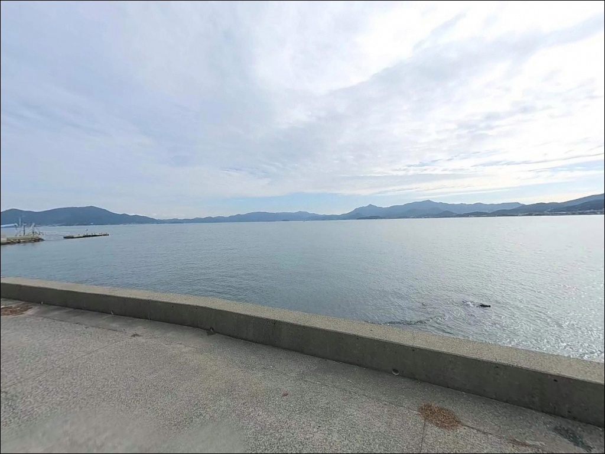
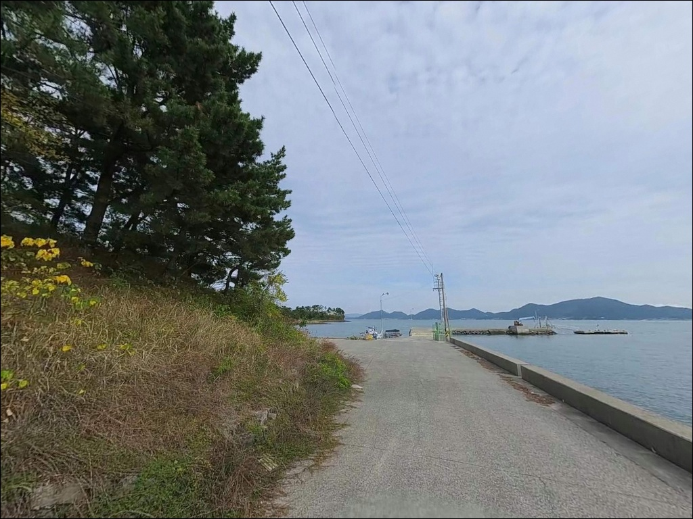
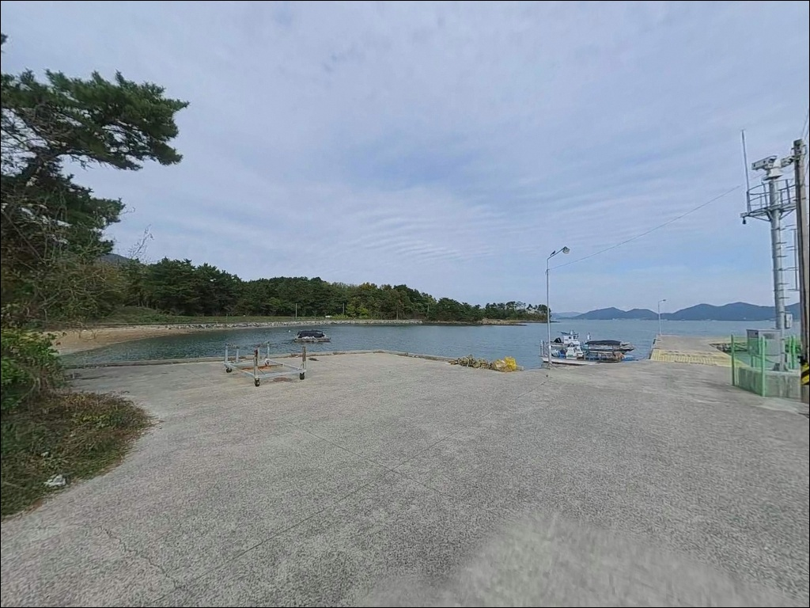
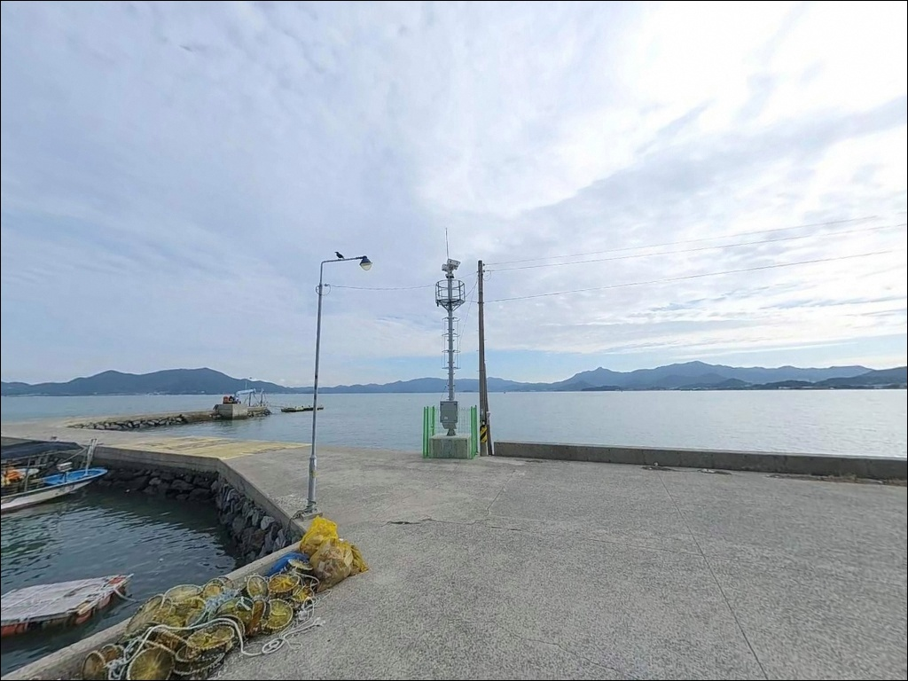

간조에 채비 바닥 긁힐 때, 남해 비란방파제 초들물 수심에서 터진 입질


포인트 안내
비란방파제
경남 남해군 설천면 진목리 1197-7
내만 깊숙이 자리한 소형 방파제는
간조 때 수심이 급격히 낮아집니다.
물때 확인 없이 방문하면
어떤 채비를 써도 바닥을 긁는 상황이 이어집니다.
비란방파제는 들물 타이밍이 낚시 성패를 결정하는
구조입니다.
남해도 북부, 광양만 입구 방향 해역과 연결된
이 방파제는 게섬과 마주보는 위치에서
수로 방향으로 조류가 흐르는 구조입니다.
루어·원투·찌낚시가 모두 통용되는
복수 방식 대응형 포인트로,
낚시 스타일에 따라 자리 선택이 달라집니다.
이 글은 비란방파제의
진입 동선, 차박 여건, 물때 판단 기준,
낚시 스타일별 공략 조건에 집중합니다.
조황 단정이나 특정 어종 보장은
이 글의 범위에 포함되지 않습니다.

1. 진입 동선과 차량 접근 조건
설천면 설천로에서 진목리 방향 해안 도로를 따라
방파제까지 접근합니다.
포장도로가 방파제 입구까지 연결되어 있으며
급경사 구간은 없는 편입니다.
다만 해안 마을 특성상
도로 폭은 1~1.5차선 수준으로 좁은 구간이 있어
대형 차량은 출발 전 위성지도 확인이 필요합니다.
방파제 끝단까지 차량 접근은 어렵습니다.
방파제 구조상 끝단 회차 공간이 충분하지 않으므로
방파제 접속부 또는 마을 해안 도로변에 주차하고
도보로 진입하는 방식이 일반적입니다.
소형 차량 기준 2~3대 수용이 가능한
갓길 형태의 공간이 있습니다.
어민 작업 동선이 겹치는 시간대에는
통행로를 막지 않도록 주차 위치를 먼저 확인합니다.
진목리 마을과 방파제가 도보 1~2분 이내로 가까워
주차 후 이동 부담은 크지 않습니다.

2. 차박 환경과 야간 체류 여건
진목리 어촌마을은 민가 밀집도가 낮은 편으로
야간 차량 통행이 거의 없습니다.
방파제 인근 해안 도로변을 활용하면
비교적 조용한 환경에서 하룻밤 머무는 것이
가능한 구조입니다.
다만 마을과의 거리가 가까워
야간 소음과 불빛 관리는 기본 매너입니다.
방파제 자체 조명은 제한적입니다.
마을 내부 가로등이 일부 있지만
방파제 끝단 방향으로 갈수록 어두워지므로
개인 헤드랜턴과 조명 장비는 필수입니다.
바람은 북풍·북서풍이 강하게 부는 날
방파제 외항 쪽이 취약한 편입니다.
기상 예보를 당일 아침 다시 확인하는 것이
체류 판단에 도움이 됩니다.
비란방파제 일대는 한려해상국립공원 구역 내에
위치할 가능성이 있습니다.
공원 구역 내 지정 장소 외에서의
야영·취사는 원칙적으로 허용되지 않으므로
현장 안내판 확인이 먼저입니다.


3. 주변 편의시설과 인프라 현황
방파제 반경 1~3km 이내에는
편의점이나 마트를 기대하기 어렵습니다.
진목리·비란리 일대는 소규모 어촌마을로
마을 내 일반 상점 위주로 형성되어 있습니다.
식수·얼음·낚시 소품은 출발 전 완비하는 것이
현실적인 준비 방식입니다.
설천면 소재지까지 차량으로 약 8분 거리이며
마트와 식당 이용이 가능합니다.
부족한 장비가 있다면 이 동선을 활용하는 편이
효율적입니다.
병원과 약국은 남해읍 방향으로
약 15km 거리에 집중되어 있으므로
비상약품도 출발 전 준비해 두는 것이 좋습니다.

4. 방문 전 반드시 챙겨야 할 준비사항
비란방파제 방문에서 가장 먼저 확인할 것은
물때입니다.
내만 구조 특성상 간조 시 수심이 크게 낮아지며
바닥이 드러나는 구간도 생깁니다.
바다타임에서 설천면 기준 물때를 확인하고
초들물~중날물 타이밍에 입장하는 것이
이 포인트의 기본 전략입니다.
남해 북부 해역은 봄철 안개와
여름 집중호우 발생 빈도가 높습니다.
출조 당일 아침 기상청 파고 예보를
반드시 한 번 더 확인하는 습관이
헛걸음을 막습니다.
암초 지형이 발달한 방파제 주변에서는
여분 채비를 넉넉히 준비하는 편이 좋습니다.
마을 선착장 구조로 어선 조업이 이루어집니다.
어선 이동 동선과 어구를 방해하지 않는 자리에
먼저 위치를 잡습니다.
방파제 난간이 없는 구간에서는
야간 이동 시 추락 주의가 필요하며
구명조끼와 헤드랜턴은 기본 장비입니다.

5. 지형 기반 낚시 여건 분석
비란방파제는 진목리 해안에서 바다 쪽으로 뻗은
짧은 소형 방파제입니다.
인근 게섬과의 사이에 형성된 수로 방향으로
방파제가 놓여 있어,
외항 쪽은 수로를 통해 흐르는 조류의 영향을
직접 받는 구조입니다.
만조 기준 끝단 수심은 3~5m권을 유지하며
방파제 끝으로 갈수록 수심 낙차가 형성됩니다.
저질은 펄과 조개껍질이 혼합된 바닥으로
원투 채비의 밑걸림이 많지 않은 편입니다.
방파제 외항 쪽 테트라포드 주변에는
어류 은신처와 먹이 활동 구간이
자연스럽게 형성되어 있습니다.
남해도 북부 해역의 조류 유속은
최고 1.8~2.3노트 수준으로 흐름이 있는 편입니다.
광양만 입구 방향으로 흐르는 횡조류 영향도
방파제 끝단에서 감지됩니다.
조류가 너무 강한 사리 전후에는
채비 컨트롤이 어려워지므로
정조 전후 타이밍을 먼저 계산하고 자리를 잡습니다.
출조 전 비란방파제 및 게섬 방파제 일대 최신 조황은
반드시 검색해 보시기 바랍니다.


6. 외항 조류를 이용한 낚시 스타일 선택법
이 포인트에서 가장 먼저 시도해볼 낚시는
루어낚시입니다.
지그헤드 웜 계열로 방파제 외항 쪽
테트라포드 사이와 끝단 바닥층을 탐색하면
노래미, 볼락, 우럭이 서식하기 좋은
지형 조건을 갖추고 있습니다.
야간 가로등 불빛이 닿는 구간에서
볼락 라이트게임도 노려볼 수 있습니다.
릴찌낚시는 방파제 외항 쪽에서
조류를 흘려 중하층 어종을 노리는 방식입니다.
만조 전후 조류 변화 구간에서
방파제 끝단과 각(코너)을 겨냥하면
감성돔·벵에돔 접근이 기대되는 지형 구조입니다.
크릴이나 청갯지렁이를 미끼로 사용합니다.
원투낚시는 이 포인트 저질 조건에 잘 맞는
스타일입니다.
펄과 모래 혼합 바닥이라 밑걸림이 적고
방파제 외항 방향으로 채비를 멀리 던져
정조 타이밍에 바닥층을 탐색하면
붕장어, 도다리 계열 어종을
기대해볼 수 있습니다.
가을~겨울철 붕장어 원투는
청갯지렁이 미끼가 적합합니다.

7. 대안 포인트와 플랜 B 동선
비란방파제 조류가 강하거나
주차 공간이 여의치 않을 때는
게섬 방파제가 첫 번째 대안입니다.
약 1.3km 거리로 같은 진목리 해안선을 공유하며
수심·저질·물때 조건이 비란방파제와
유사한 구간입니다.
비란방파제를 처음 방문하는 날이라면
게섬 방파제를 함께 묶어 탐색하는 동선이
효율적입니다.
모천 방파제는 약 2~3km 거리에 있습니다.
비란방파제보다 포인트 규모가 안정적이며
수심이 더 확보되는 편입니다.
비란방파제에서 조황이 여의치 않다면
모천 방파제를 두 번째 대안으로 두고
물때가 살아 있는 시간에 이동합니다.
남해충렬사 방파제(노량리)는 약 7km 거리로
이 일대에서 수심이 깊은 편인 방파제입니다.
수심 2~2.8m 수준으로 원투·루어·릴찌 등
다양한 낚시 방식이 통용됩니다.
설천면 방파제 전체가 여의치 않을 경우
최종 대안으로 활용하기 좋은 포인트입니다.

들물 타이밍 하나가
비란방파제의 모든 것을 결정합니다
루어·릴찌·원투 복수 방식을 즐기는 낚시인이라면
비란방파제의 지형 조건은
다양한 시도가 가능한 구조입니다.
테트라포드 주변 루어부터
외항 조류를 흘리는 릴찌낚시까지
한 자리에서 방식을 바꿔가며
공략할 수 있습니다.
반면 물때 계산 없이 간조 시간에 도착하거나
한려해상국립공원 야영 여부를 확인하지 않으면
낚시도 차박도 뜻대로 풀리지 않는
포인트이기도 합니다.
물때 확인, 진입로 사전 점검, 자급 준비
이 세 가지를 갖추고 찾아간다면
진목리 조용한 어촌에서
낚시와 하룻밤 차박을 함께 즐길 수 있는
포인트입니다.